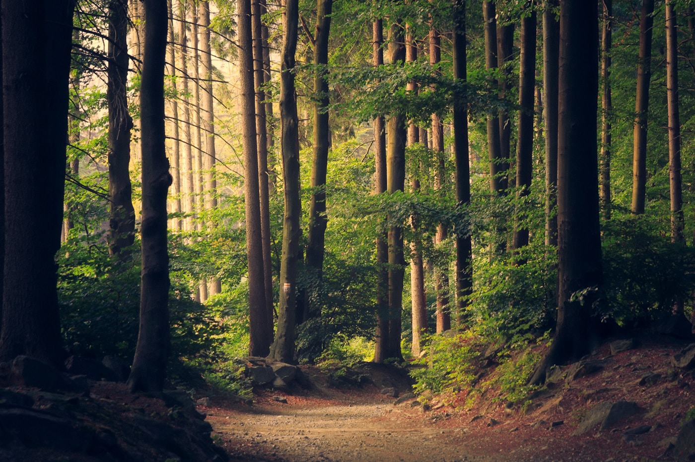

01🤝
Comunitate activă
Creăm contexte în care oamenii se întâlnesc, se implică și transformă ideile bune în inițiative locale. Punte cu instituțiile.
Asociație nonguvernamentală · Târgu Neamț · ANAF 10.06.2026 ✓
Punem oamenii în mișcare pentru o comunitate mai curajoasă, mai solidară și mai aproape de natură. 189 aprecieri pe Facebook și 5 direcții: umanitar, drumeții, radioamatorism, civic și educație.
Suntem o organizație nonprofit născută din dorința de a contribui activ la dezvoltarea comunității locale.
„Asociația «HOINARII» — Promovarea activităților de a ajuta comunitatea prin acțiuni de filantropie definite prin diverse forme de ajutor față de persoanele defavorizate…” — descrierea oficială de pe Facebook (189 aprecieri).
În actele oficiale (Registrul Național ONG 1650/A/2026) scopul nostru este: sprijin umanitar și social, promovarea participării active în viața publică prin acțiuni umanitare, radioamatorism & tehnologii moderne, sport & agrement (drumeții, ciclism, camping, turism montan), valori democratice și punte cu instituțiile.

Credem în proiecte concrete, colaborare și în puterea inițiativelor care pornesc de aproape. + Radioamatorism YO.
Creăm contexte în care oamenii se întâlnesc, se implică și transformă ideile bune în inițiative locale. Punte cu instituțiile.
Susținem curiozitatea și experiențele care îi ajută pe copii și tineri să crească — camping, ateliere, mentorat.
Aducem spiritul de aventură mai aproape: drumeții, ciclism, turism montan cu respect pentru locurile care ne găzduiesc.
Ne mobilizăm unde e nevoie: colectăm, sortăm, livrăm bani/bunuri pentru persoane vulnerabile — transparent.
YO8 — comunicații, antene, concursuri, tehnologii moderne și comunicații de urgență pentru tineri.
 Împreună, pe teren
Împreună, pe terenÎn 2023, Hoinarii s-au numărat printre partenerii unei acțiuni de ecologizare la Târgu Neamț, unde voluntarii au colectat deșeuri și au redat comunității spații mai curate.
Sursă publică: Agenția pentru Protecția Mediului Neamț, 17 iulie 2023. Plus: 5 direcții active • 189 aprecieri • CUI 54680070.

Redirecționarea nu te costă nimic, dar pentru comunitate poate însemna începutul unui proiect nou. Formular 230 precompletat: CUI 54680070 • IBAN RO22 BTRL RONC RT0D F069 0401 • An 2026.
Completează formularul ↗Banca Transilvania • BTRLRO22 • 25 mai termen ANAF • ID 192768468